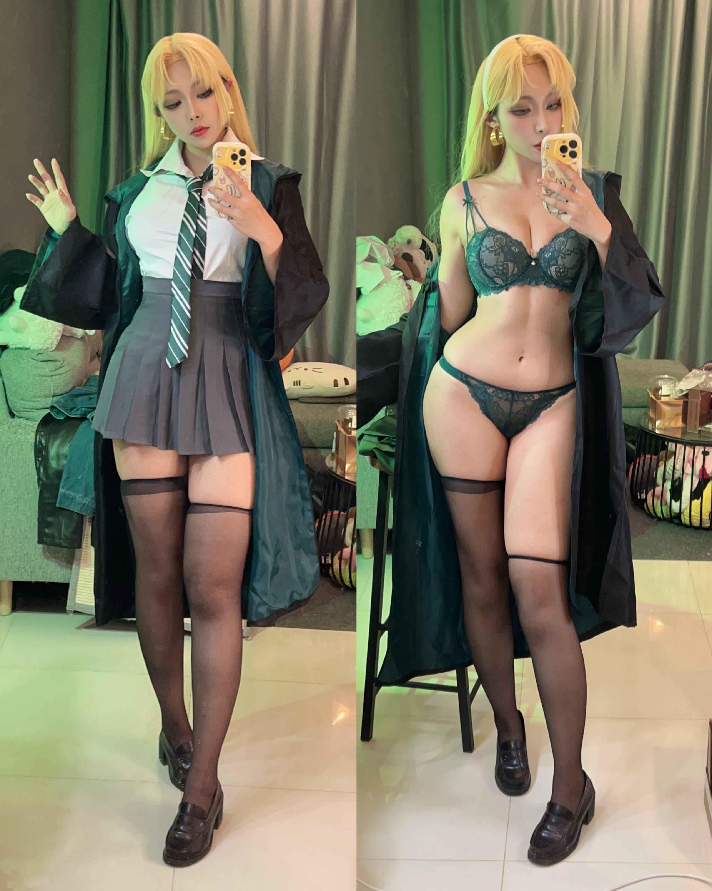
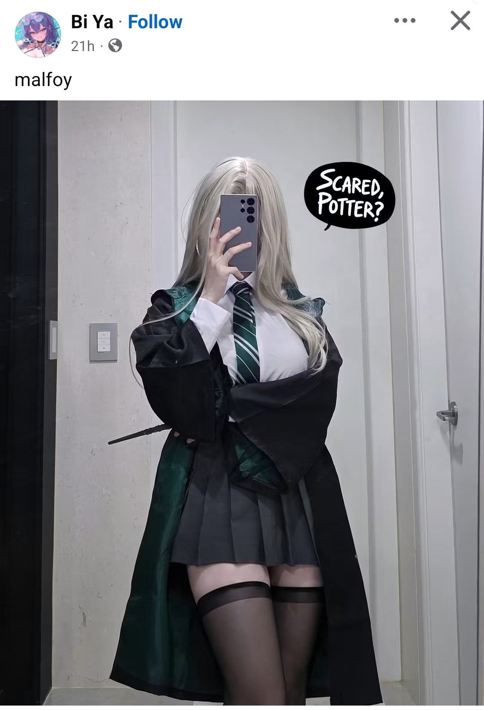

27 · 12 · 26 분 전 · 원문


포터가 못참을듯
수집 당시 댓글 12개
이거여기서봤음 · 2 시간 전
해피엔딩
명동발만두 · 2 시간 전
해리는 좀 기가 넘치니까 수용가능
링케 · 2 시간 전
쇼펜하우어 · 2 시간 전
사촌간불알빨기 · 2 시간 전
미즈미야스우 · 2 시간 전
첫날에 기차에서 '나랑 친하게 지내 잡종들하고 놀지 말고' 햇을때 바로 '구랭!!' 햇지
감귤온천 · 1 시간 전
크르르르… 못참겠다 말포이!!
↳ 답글 · 썬팅빌런 · 36 분 전
해리게이?
BTS그래미수상 · 26 분 전
아 진짜 존나 박고 싶네
잡고싶은허리 · 19 분 전
야추에호하면조세호 · 2 분 전
년차대출갚는중 · 방금 전
볼드모트도 몸 찾고 시원하게 한발빼겠다


해피엔딩